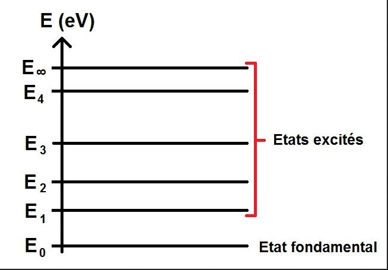
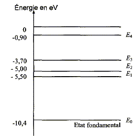
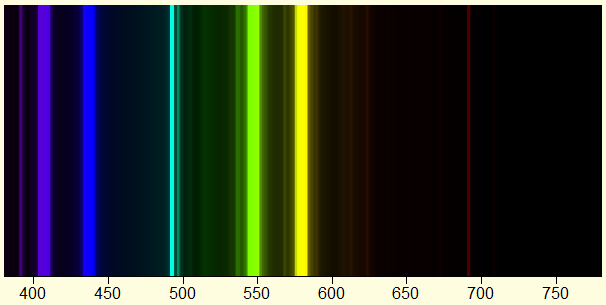
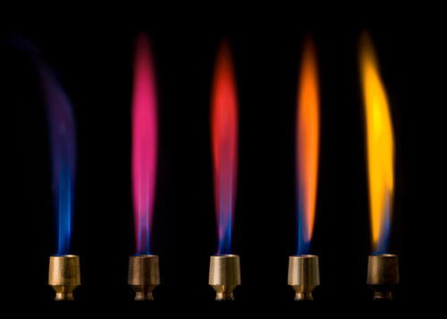

Les niveaux d’énergies des atomes:
Les niveaux d'énergie d'un atome décrivent les différentes positions où les électrons peuvent se trouver autour
du noyau de l'atome. Ces niveaux sont comme des étages différents d'un immeuble, et les électrons peuvent passer
d'un étage à l'autre en absorbant ou en émettant de l'énergie. Les niveaux les plus proches du noyau ont une énergie
plus faible, alors que les niveaux les plus éloignés ont une énergie plus élevée. Le niveau d’énergie
le plus bas est appelé l’état fondamental , les autres niveaux sont appelés des états excités.

La couleur d'une lampe spectrale de mercure dépend des niveaux d'énergie des électrons dans l'atome de mercure. Lorsque l'électricité traverse la lampe, elle excite les électrons dans l'atome de mercure, les faisant sauter à des niveaux d'énergie plus élevés. Lorsque ces électrons retournent à leurs niveaux d'énergie normaux, ils émettent de la lumière, pour la lampe spectrale de mercure, celle-ci émet une lumière blanche qui contient toutes les couleurs de l'arc-en-ciel, mais elle a des raies de couleurs spécifiques. Les raies de couleurs les plus courantes sont le bleu, le violet, le vert, le jaune et le rouge. Chaque élément a ses propres niveaux d'énergie et les transitions entre ces niveaux produisent des couleurs de lumières spécifiques.


Diagramme énergétique et spectre d’émission du Mercure
________________________________________________________________
De même, lorsque des éléments différents sont mis à feu, ils produisent des flammes de couleurs différentes. Les électrons des différents atomes sautent entre différents niveaux d'énergie en absorbant de l'énergie de la combustion, puis en émettant de la lumière lorsqu'ils retournent à leurs niveaux d'énergie initials. Chaque élément a ses propres niveaux d'énergie et les transitions entre ces niveaux produisent des couleurs de lumières spécifiques, ce qui explique pourquoi chaque flamme tend à avoir une couleur qui lui est propre. Par exemple: image couleur flamme

Flammes colorées, de gauche à droite :
violet pâle (potassium),
rose fuchsia (lithium), rouge (strontium), orangé (calcium), jaune (sodium)
________________________________________________________________